Two Months Today
“…I know in whom
I have trusted.”
Keep the verses that stay with you
Highlight a verse and the app holds on to it.
New ScripturePlus App
Read with the commentary, video, and maps that open each chapter, a little deeper every day.
Free. No subscription. Supported by donors.
Read deeper every day with commentaries, 3D models, videos, maps, and more.
Behind every verse there is a
question someone has spent a career on.
The commentary, the history,
the archaeology, the video.
Scripture Central has been gathering
it for decades, and now it sits next to the words that raised it.
Behind every verse there is a
question someone has spent a career on.
The commentary, the history,
the archaeology, the videos.
Scripture Central has gathered these resources for more than a decade, and now they meet you alongside the words that inspired them.
Move easily between books, chapters, and verses in a clean, distraction-free reader, with customizable text, multiple scripture editions, and essential study tools always close at hand.
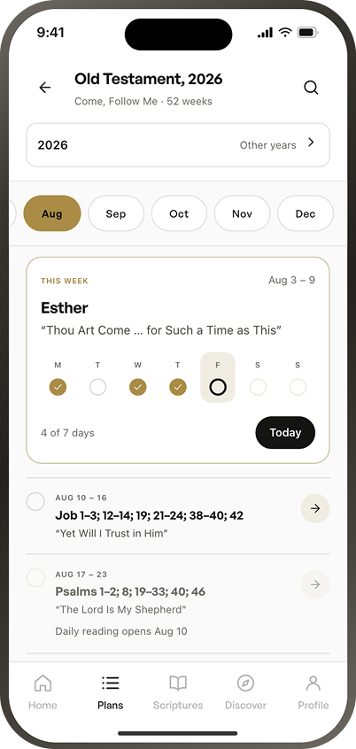
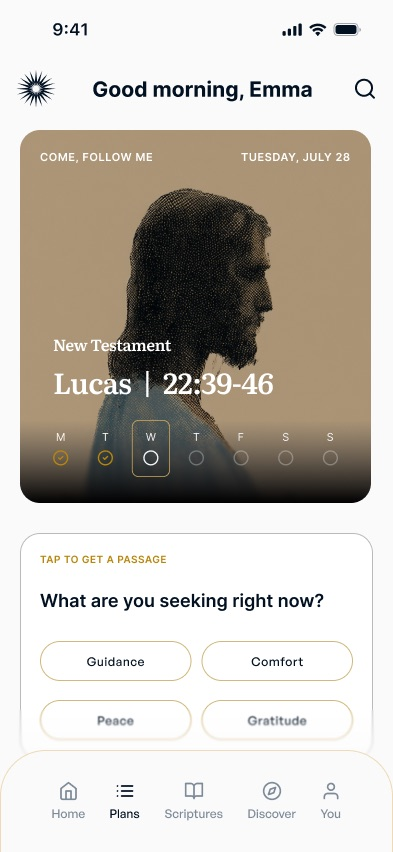
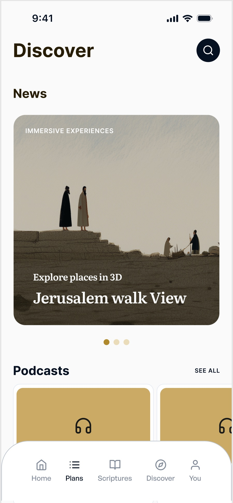
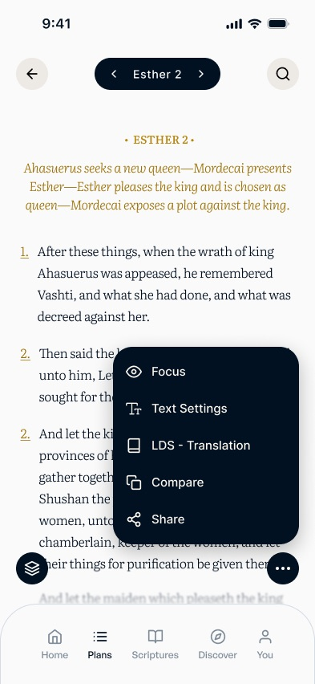
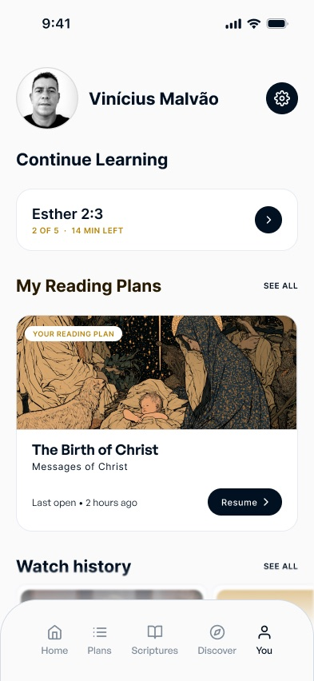
Scripture Central brings the scriptures to life. ScripturePlus helps carry them into your mind and heart.
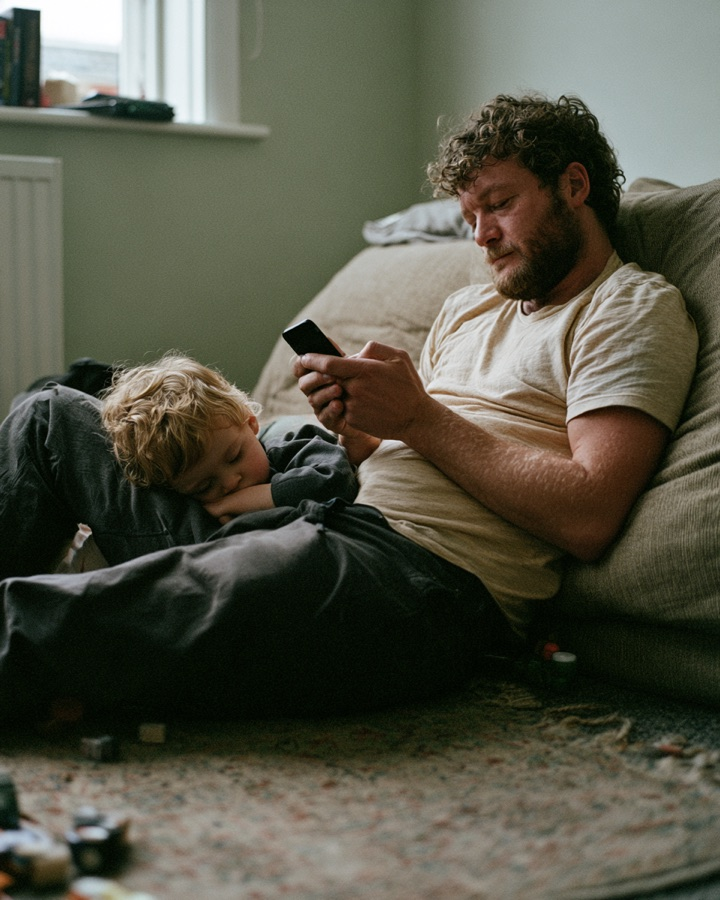
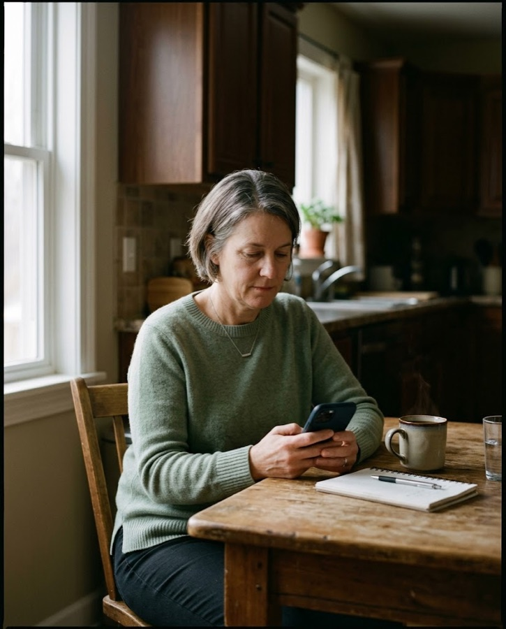
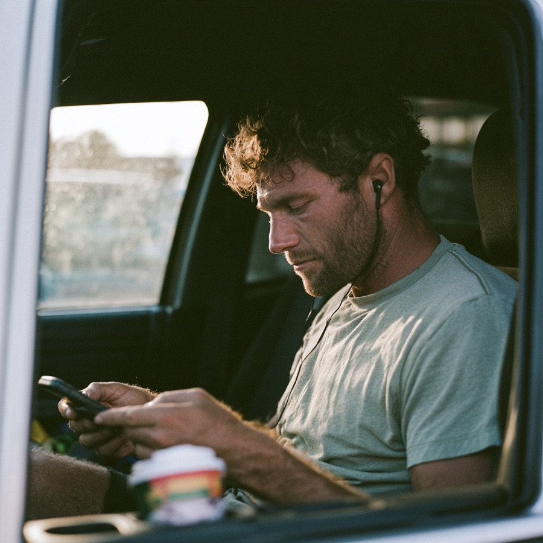
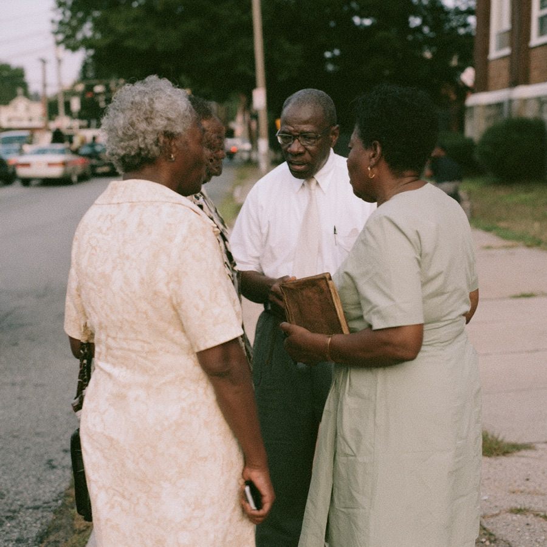
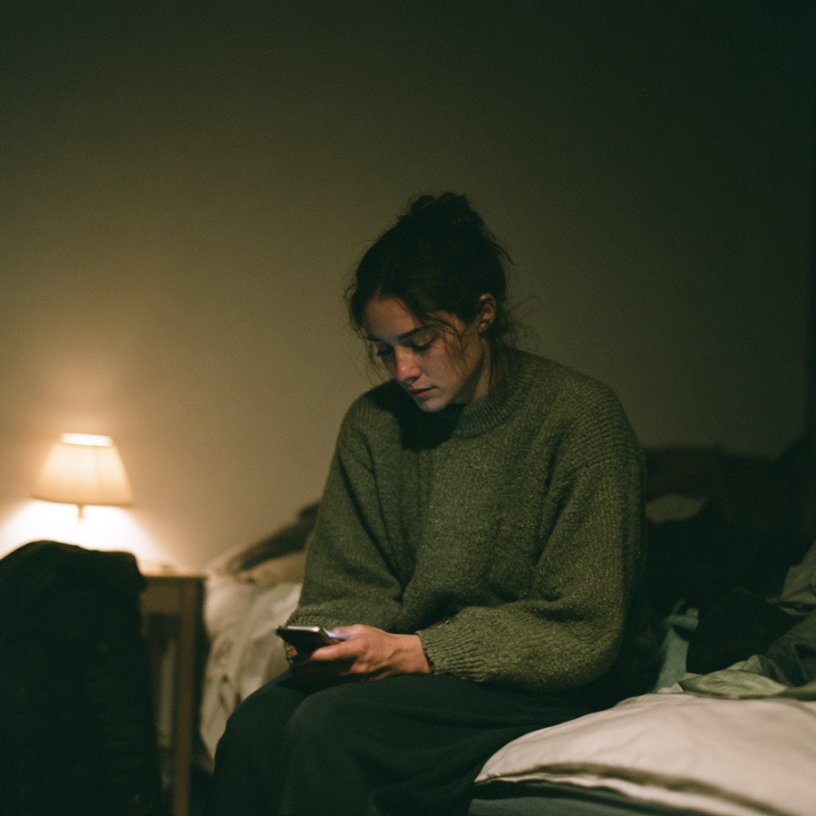
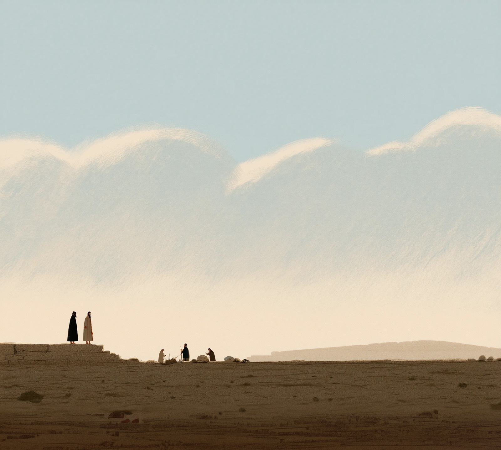
Scripture Central gives you a welcoming place to begin and trusted paths for going deeper.
Scripture Central gives you a welcoming place to begin and trusted paths for going deeper.
Two Months Today
“…I know in whom
I have trusted.”
Highlight a verse and the app holds on to it.
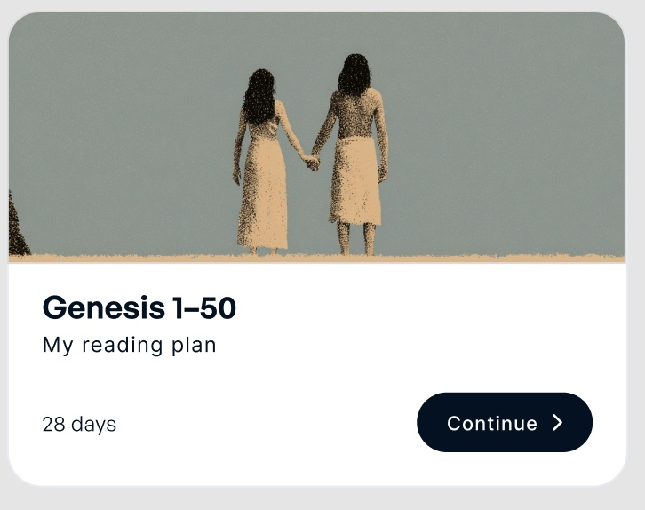
Pick a book, choose how many days, and the reading lays itself out.
Enrichment resources have already been gathered and organized for you.
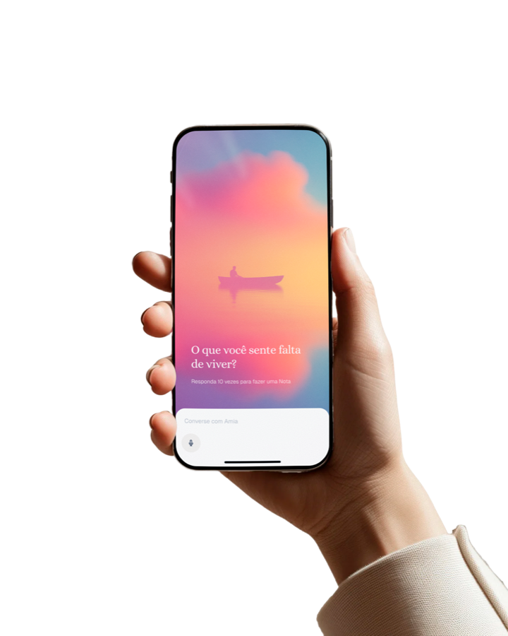
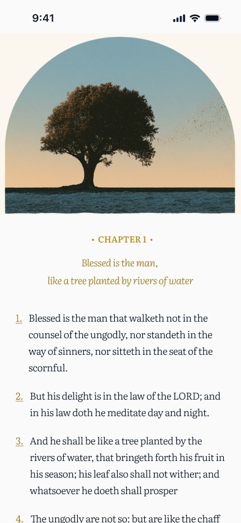
Nothing to turn on and nothing to configure. The chrome fades as you move down the chapter, and the text is left alone with you.
Try nowNothing to turn on and nothing to configure. The chrome fades as you move down the chapter, and the text is left alone with you.
Try now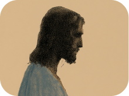
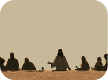
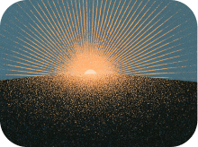
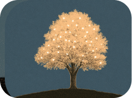
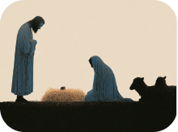
Our research team has spent countless hours identifying and curating the best scholarship available. It’s always faithful and illuminating.
About Scripture Central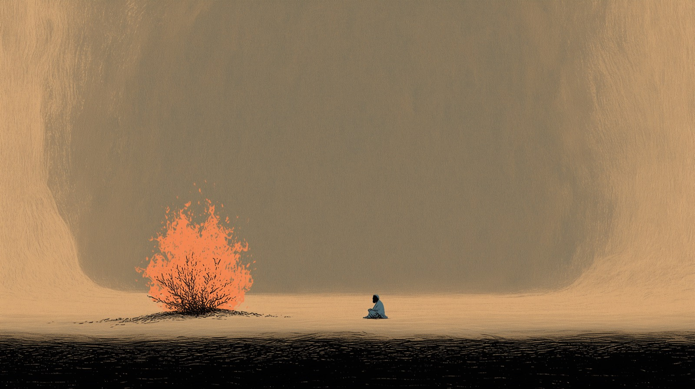
ScripturePlus is free, with no subscription and no ads. Scripture Central is a nonprofit, and the app is funded by people who believe these resources should be available to everyone.